November9 local review drafts. Art and docs only; no game changes or push. Exact magenta backgrounds are intentional.
Native export and GIF validation report
Six 192×224 cells. Porch edge y216. Yard preview uses the native ground tiles.
Native PNG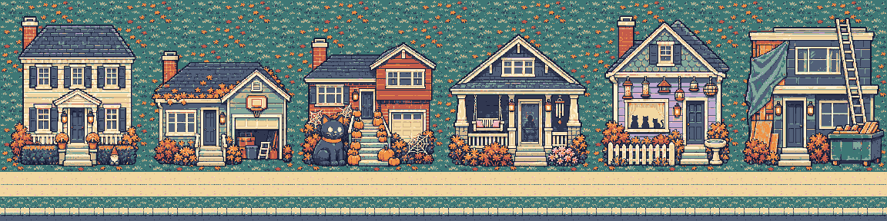
Four rows of eight 48×48 frames, 100 ms. Face right; mirror left.
Native PNG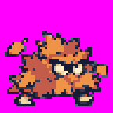
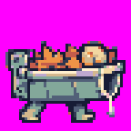
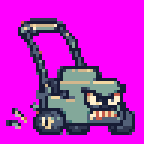
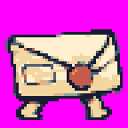
448×300, 56×60 cells. Target75 ms, GIF centisecond rounding may encode70 ms. Darker material edges, faceted highlights and the same six extra shades as the 9-to-5er.
Native PNG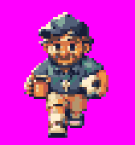
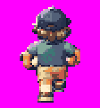
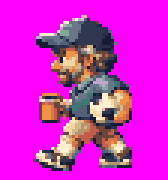
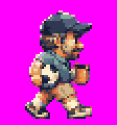
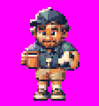
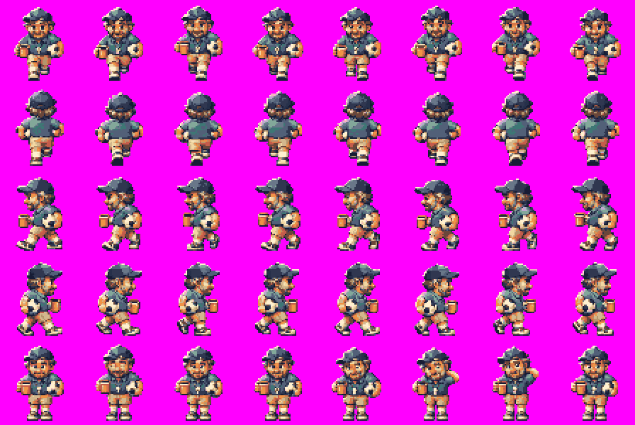
448×300, 56×60 cells. Target75 ms, GIF centisecond rounding may encode70 ms. Darker material edges, faceted highlights and the same six extra shades as the 9-to-5er.
Native PNG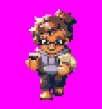
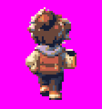
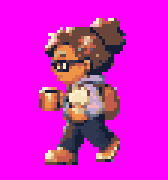
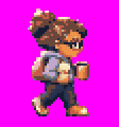
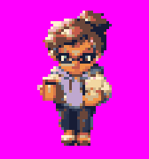
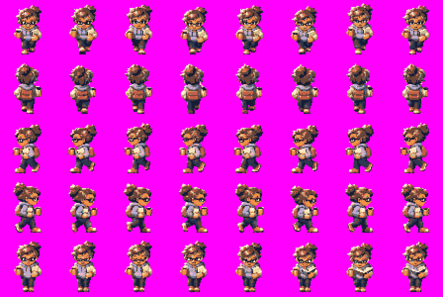
448×300, 56×60 cells, y56 sole line. Brown hair and tired expression; idle blows dust from a floppy disk.
Native PNG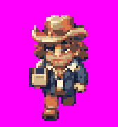
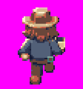
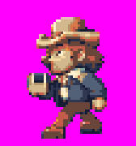
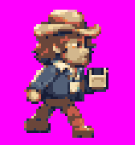
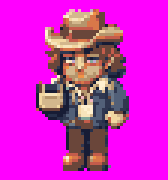
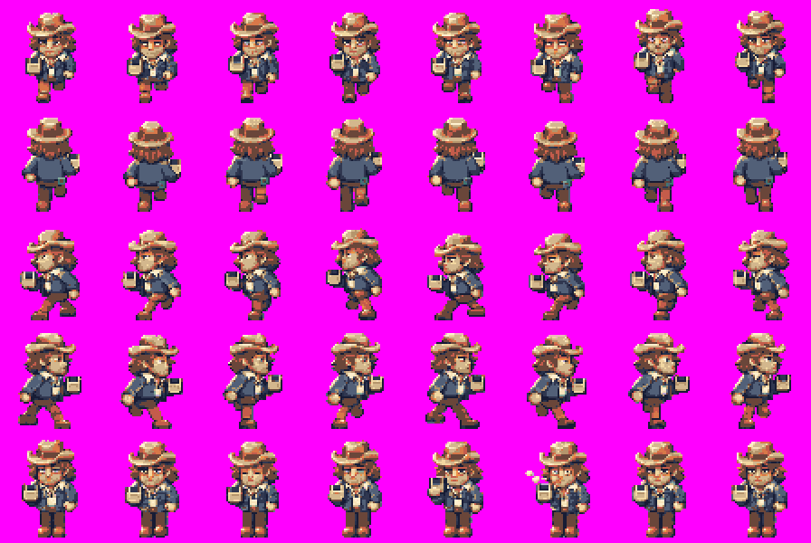
256×64 native, eight32px cells in row0; row1 intentionally blank. The4× export is1024×256.
Native PNG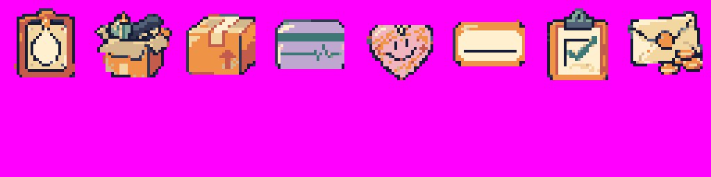